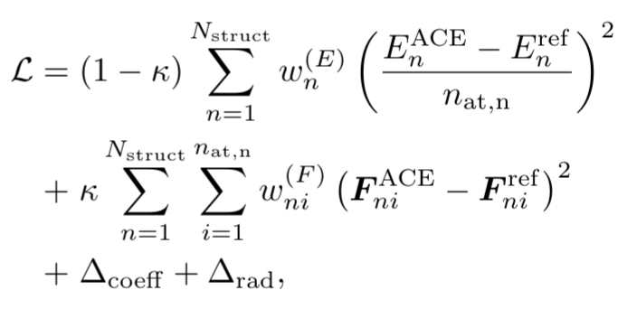
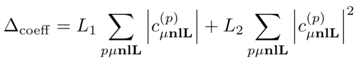

Parametrising a Machine Learning Interatomic Potential #
In this notebook we will show the strategies for the generation of a DFT data set for fitting of a machine learning interatomic potential. We will then fit an Atomic Cluster Expansion interatomic potential using the pacemaker software.
%config IPCompleter.evaluation='unsafe'
from pyiron import Project
import numpy as np
import matplotlib.pyplot as plt
We start by creating a project
pr = Project('dataset_generation')
In this notebook, we will use aluminium as an example, similar to the last notebook. Data sets for fitting ML potentials should contain local and global minima of the potential energy surface, such as relaxed stable and metastable bulk structures. There are many strategies that can be employed to generate datasets, we will look at some of them here.
Generating bulk structures #
One of the strategies employed is to generate bulk structure of Al which is then fully relaxed, and stored for ML fitting. Here, we will show the example of fcc Al.
Al = pr.create.structure.bulk('Al', cubic=True)
For more details on generating and manipulating structures, please have a look at our structures example. In this section however, we show how to generate and manipulate bulk crystals, surfaces, etc. pyiron’s structure class is derived from the popular ase package and any ase function to manipulate structures can also be applied here.
Now we have to relax this structure. Ideally, high convergence DFT calculations are needed, eg with VASP or QuantumEspresso. Here we will simply use LAMMPS with an emperical potential to demonstrate the calculations.
job = pr.create.job.Lammps('Al_bulk', delete_aborted_job=True)
job.structure = Al
job.potential = "2005--Mendelev-M-I--Al-Fe--LAMMPS--ipr1"
Now relax the structure
job.calc_minimize(pressure=0)
And run the job
job.run()
Another step done to collect structures for fitting is to run a EV curve . We can use the Murnaghan job from pyiron for this. First we set up a LAMMPS job again.
job = pr.create.job.Lammps('Al_bulk', delete_existing_job=True, delete_aborted_job=True)
job.structure = Al
job.potential = "2005--Mendelev-M-I--Al-Fe--LAMMPS--ipr1"
job.calc_minimize()
Now we can create a Murnaghan Job
murn = job.create_job(pr.job_type.Murnaghan, 'murnaghan')
We can check the possible input options:
murn.input
And run the job:
murn.run()
You can directly visualize the results of the murn job:
murn.plot();
And take a look at the output
murn['output']
Adding strains#
A usual approach is to start with some prototypical structures and strain and shake them. We can use the fcc Al we created earlier.
strains = np.linspace(-0.05, 0.05, 5)
strains
We will also create a StructureStorage which easily save these structures, and run calculations with them later.
from pyiron_atomistics.atomistics.structure.structurestorage import StructureStorage
store = StructureStorage()
for eps in strains:
store.add_structure(
structure=Al.apply_strain(eps, return_box=True),
identifier=f'fcc_{eps}'
)
We can also add random displacements to atom positions using the rattle method
for eps in strains:
structure = Al.apply_strain(eps, return_box=True)
structure.rattle(0.05)
print('Strain', eps, 'Volume', structure.get_volume(per_atom=True))
store.add_structure(
structure=structure,
identifier=f'fcc_{eps}_rattle'
)
Random crystals#
pyxtal is a program to generate random structures of a given space group and stoichiometry.
It is useful for crystal structure prediction and also for generating training structures.
import structuretoolkit as stk
from pyiron_atomistics import ase_to_pyiron
structuretoolkit is a library for structure manipulation and analysis also developed by the pyiron team. For compatibility with a wider range of codes it operates purely on ASE Atoms objects, so we need to convert structures explicitely here. In the next release of pyiron_atomistics you will be able to call pr.create.structure.pyxtal directly for a more convenient wrapper.
We usually also use random crystals generated by sampling random space groups. One would use more spacegroups and differently sized unit cells, but we’ll keep it simple here. Details can be found in this paper.
groups = [1, 194, 225]
for i, structure in enumerate(stk.build.pyxtal(
group=groups,
species=['Al'],
num_ions=[4],
tm='metallic'
)):
store.add_structure(
structure=structure['atoms'],
identifier=f'random_{i}'
)
We can now collected a number of structures in the store.
store.number_of_structures
Calculating energies and forces#
The next step is to calculate the energies and forces
for i, structure in enumerate(store.iter_structures()):
# pyiron has some opinions of what is a proper "job name" for technical reasons, but
# you can always use this function to translate your favorite one into a "proper" one
name = pr.create.job_name(store['identifier', i])
job = pr.create.job.Lammps(name)
job.potential = "2005--Mendelev-M-I--Al-Fe--LAMMPS--ipr1"
job.structure = structure
job.calc_static()
job.run()
Once our reference calculations are finished, we can collect the results in a container for convenience.
train = pr.create.job.TrainingContainer("AlLi")
We include all the jobs we did so far in the TrainingContainer
for job in pr.iter_jobs(hamilton='Lammps', status='finished'):
for i in range(job.number_of_structures):
train.include_job(job, iteration_step=i)
“Running” the container simply saves it to disk and to our database. It can also precompute nearest neighbor information.
train.run()
Besides keeping everything in one place, the TrainingContainer also defines a number of plotting functions.
df = train.plot.energy_volume()
train.plot.energy_distance()
plt.xlabel(r'Minimum Nearest Neighbor Distance [$\mathrm{\AA}$]')
plt.ylabel('Energy [eV/atom]');
For fitting potentials within pyiron you can use the container as is, but if you have external tools, you can export the data into a table.
train.to_pandas()
Fitting an ACE potential #
Now that we have looked at how we create datasets for fitting, we can actually go ahead and fit an ACE potential. Note that we used an empirical potential instead of DFT before. For the fitting, we provide a very small Al dataset that can be used. This dataset is in the form of a packed pyiron project. We start by extracting it first.
pr = Project('fitting')
We will extract the ‘dataset.tar.gz’ file into this project
pr.unpack('dataset')
Now we create a job for fitting
job = pr.create.job.PacemakerJob("pacemaker_job")
Now we add the training set we created above to this fitting job
training_data = pr.load('Al_dataset')
job.add_training_data(training_data)
We can now take a look at the different potential settings
job.input
The job starts with a robust set of default input parameters. Any input quantity can of course be reset. For example, an important setting is the cutoff distance. We change it to 6.0
job.cutoff=6.0
In general a (P)ACE potential specification consists of three parts:
1. Embeddings#
i.e. how atomic energy \(E_i\) depends on ACE properties/densities \(\varphi\). Linear expansion \(E_i = \varphi\) is the trivial. Non-linear expansion, i.e. those, containing square root, gives more flexiblity and accuracy of final potential
Embeddings for ALL species:
non-linear
FinnisSinclairShiftedScaled2 densities
fs_parameters’: [1, 1, 1, 0.5]: $\(E_i = 1.0 * \varphi(1)^1 + 1.0 * \varphi(2)^{0.5} = \varphi^{(1)} + \sqrt{\varphi^{(2)}} \)$
job.input["potential"]["embeddings"]
2. Radial functions#
Radial functions are orthogonal polynoms example:
(a) Exponentially-scaled Chebyshev polynomials (λ = 5.25)
(b) Power-law scaled Chebyshev polynomials (λ = 2.0)
(c) Simplified spherical Bessel functions

Radial functions specification for ALL species pairs (i.e. Al-Al, Al-Li, Li-Al, Li-Li):
based on the Simplified Bessel
cutoff \(r_c=6.0\)
job.input["potential"]["bonds"]
3. B-basis functions#
B-basis functions for ALL species type interactions, i.e. Al-Al block:
maximum order = 4, i.e. body-order 5 (1 central atom + 4 neighbour densities)
nradmax_by_orders: 15, 3, 2, 1
lmax_by_orders: 0, 3, 2, 1
job.input["potential"]["functions"]
We will reduce the basis size for demonstartion purposes
job.input["potential"]["functions"]["ALL"]["nradmax_by_orders"] = [15, 3, 2]
job.input["potential"]["functions"]["ALL"]["lmax_by_orders"] = [0, 2, 1]
Loss function specification


job.input["fit"]["loss"]
Weighting#
Energy-based weighting puts more “accent” onto the low energy-lying structures, close to convex hull
job.input["fit"]['weighting'] = {
## weights for the structures energies/forces are associated according to the distance to E_min:
## convex hull ( energy: convex_hull) or minimal energy per atom (energy: cohesive)
"type": "EnergyBasedWeightingPolicy",
## number of structures to randomly select from the initial dataset
"nfit": 10000,
## only the structures with energy up to E_min + DEup will be selected
"DEup": 10.0, ## eV, upper energy range (E_min + DElow, E_min + DEup)
## only the structures with maximal force on atom up to DFup will be selected
"DFup": 50.0, ## eV/A
## lower energy range (E_min, E_min + DElow)
"DElow": 1.0, ## eV
## delta_E shift for weights, see paper
"DE": 1.0,
## delta_F shift for weights, see paper
"DF": 1.0,
## 0<wlow<1 or None: if provided, the renormalization weights of the structures on lower energy range (see DElow)
"wlow": 0.95,
## "convex_hull" or "cohesive" : method to compute the E_min
"energy": "convex_hull",
## structures types: all (default), bulk or cluster
"reftype": "all",
## random number seed
"seed": 42
}
Maximum number of iterations by optimizer (SciPy.minimize.BFGS). Typical values are ~1000-1500, but we chose small value for demonstration purposes only
job.input["fit"]["maxiter"]=100
For more details about these and other settings please refer to official documentation
Now we can run the fit
job.run()
Take a look at the fitting results:
plt.plot(job["output/log/loss"])
plt.xlabel("# iter")
plt.ylabel("Loss")
plt.loglog();
plot RMSE values of energy per atom:
plt.plot(job["output/log/rmse_epa"])
plt.xlabel("# iter")
plt.ylabel("RMSE E, eV/atom")
plt.loglog();
As we see, the really small potential we fit, has already reached meV accuracy!
plot force component RMSE:
plt.plot(job["output/log/rmse_f_comp"])
plt.xlabel("# iter")
plt.ylabel("RMSE F_i, eV/A")
plt.loglog();
load DataFrame with predictions of energy
ref_df = job.training_data
pred_df = job.predicted_data
plt.scatter(pred_df["energy_per_atom_true"],pred_df["energy_per_atom"])
plt.xlabel("Dataset E, eV/atom")
plt.ylabel("ACE E, eV/atom")
and forces
plt.scatter(ref_df["forces"],pred_df["forces"])
plt.xlabel("Dataset F_i, eV/A")
plt.ylabel("ACE F_i, eV/A")
Check more in job.working_directory/report folder
! ls {job.working_directory}/report
Bonus: Scaling structures#
Another approach used is scaling the structures. We start by creating a bulk fcc again.
Al = pr.create.structure.bulk('Al', cubic=True, a=4.04)
We now scale the structure such that minimum nearest neighbor distance is varied from 2 to 6.5 Å in 0.5 intervals. We will also create a StructureStorage which easily save these structures, and run calculations with them later.
store = StructureStorage()
We start by getting the minimum nearest neighbor distance
distances = Al.get_all_distances(mic=True).flatten()
min_distance = np.min(distances[np.nonzero(distances)])
min_distance
The range of distances needed, and convert them to fractions
d_arr = np.arange(2, 7, 0.5)
scale = d_arr/np.min(distances[np.nonzero(distances)])
Now for each scaling, create a structure and store it
for s in scale:
struct = Al.copy()
struct.apply_strain(s)
store.add_structure(struct, identifier=f'fcc_nnscale_{s}')
Note that this procedure has to be repeated for other bulk structures of interest.
Bonus: Structures from Materials Project#
For binary AlLi structures, we queried them from materials project. This can be done with pyiron. Note that you have to provide a Materials Project API key for this functionality.
api_key=''
We can query structures that lie on the convex hull
structures = pr.create.structure.materialsproject.search(['Al-Li'], is_stable=True, api_key=api_key)
We add these structures to the store
for structure in structures:
store.add_structure(structure, identifier=structure.get_chemical_formula())
Note that you can also visualise the structures.
structures.get_structure(frame=3).plot3d()
We need to relax these structure, but also perfrom EV curves, and scaling of the nearest neighbor distance as before. This is skipped for now.
Bonus: How does an actual potential file look like ? #
output_potential.yaml:
species:
# Pure Al interaction block
- speciesblock: Al
radbase: SBessel
radcoefficients: [[[1.995274603767268, -1.1940566258712266,...]]]
nbody:
# first order/ two-body functions = pair functions
- {type: Al Al, nr: [1], nl: [0], c: [2.0970219095074687, -3.9539202281610351]}
- {type: Al Al, nr: [2], nl: [0], c: [-1.8968648691718397, -2.3146574133175974]}
- {type: Al Al, nr: [3], nl: [0], c: [1.3504952496800906, 1.5291190439028692]}
- {type: Al Al, nr: [4], nl: [0], c: [0.040517989827027742, 0.11933504671036224]}
...
# second order/ three-body functions
- {type: Al Al Al, nr: [1, 1], nl: [0, 0], c: [0.57788490809100468, -1.8642896163994958]}
- {type: Al Al Al, nr: [1, 1], nl: [1, 1], c: [-1.0126646532267587, -1.2336078784112348]}
- {type: Al Al Al, nr: [1, 1], nl: [2, 2], c: [-0.19324470046809467, 0.63954472122968498]}
- {type: Al Al Al, nr: [1, 1], nl: [3, 3], c: [-0.22018334529075642, 0.32822679746839439]}
...
# fifth order/ six-body functions
- {type: Al Al Al Al Al Al, nr: [1, 1, 1, 1, 1], nl: [0, 0, 0, 0, 0], lint: [0, 0, 0], c: [-0.71...]}
# binary Al-Li interaction block
- speciesblock: Al Li
...
nbody:
- {type: Al Li, nr: [1], nl: [0], c: [0.91843424537280882, -2.4170371138562308]}
- {type: Al Li, nr: [2], nl: [0], c: [-0.88380210517336399, -0.97055273167339651]}
...
- {type: Al Al Al Li Li, nr: [1, 1, 1, 1], nl: [1, 1, 0, 0], lint: [0, 0], c: [-0.0050,...]}
...
# Pure Li interaction block
- speciesblock: Li
nbody:
...
- {type: Li Li Li, nr: [4, 4], nl: [3, 3], c: [-0.0059111333449957159, 0.035]}
- {type: Li Li Li Li, nr: [1, 1, 1], nl: [0, 0, 0], lint: [0], c: [0.210,...]}
...
# binary Al-Li interaction block
- speciesblock: Li Al
nbody:
...
- {type: Li Al Al, nr: [4, 4], nl: [3, 3], c: [0.014680736321211739, -0.030618474343919122]}
- {type: Li Al Li, nr: [1, 1], nl: [0, 0], c: [-0.22827705573988896, 0.28367909613209036]}
...
output_potential.yaml is in B-basis form. For efficient LAMMPS implementaion it should be converted to so-called C-tilde form. This is already done by pyiron, but it could be also done manually by pace_yaml2yace utility. Check here for more details